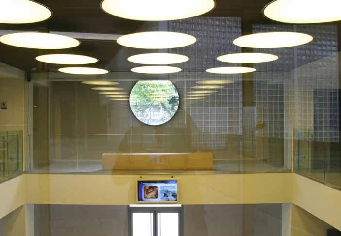

Marketing y comunicación
Canal Salud de la Mujer
USP Institut Universitari Dexeus · Barcelona
Mi aportación. Dirección de Optimus · contenidos y comunicación audiovisual

01
Contexto
Un canal de televisión para salas de espera y vestíbulos del nuevo edificio de Dexeus.
02
Necesidad
Organizar contenidos útiles para los usuarios en diferentes espacios del centro.
03
Estrategia
El equipo de Optimus desarrolló la identidad del canal, la parrilla y los contenidos de lanzamiento, junto con un sistema de distribución y gestión audiovisual. Mi vinculación corresponde a la dirección de la empresa.
04
Impacto
El dosier documenta el diseño y la producción de contenidos del canal y el sistema de emisión.

Créditos y alcance
Destinatario: USP Institut Universitari Dexeus. Diseño y producción: Optimus Medina Riley.
¿Qué tienes entre manos?
Podemos empezar por una necesidad concreta o por una idea que aún necesita forma.